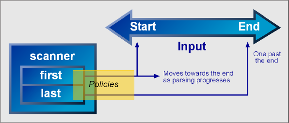

| The Scanner and Parsing |
 |
 |
 |
The scanner's task is to feed the sequential input data stream to the parser. The scanner extracts data from the input, parceling, potentially modifying or filtering, and then finally relegating the result to individual parser elements on demand until the input is exhausted. The scanner is composed of two STL conforming forward iterators, first and last, where first is held by reference and last, by value. The first iterator is held by reference to allow it to be re-positioned. The following diagram illustrates what's happening:
|  |
The scanner manages various aspects of the parsing process through a set of policies. There are three sets of policies that govern:
Iteration and filtering
These policies are mostly hidden from view and users generally need not know about them. Advanced users might however provide their own policies that override the ones that are already in place to fine tune the parsing process to fit their own needs. We shall see how this can be done. This will be covered in further detail later.
The scanner is a template class expecting two parameters: IteratorT, the iterator type and PoliciesT, its set of policies. IteratorT defaults to char const* while PoliciesT defaults to scanner_policies<>, a predefined set of scanner policies that we can use straight out of the box.
template<
typename IteratorT = char const*,
typename PoliciesT = scanner_policies<> >
class scanner;Spirit uses the same iterator concepts and interface formally defined by the C++ Standard Template Library (STL). We can use iterators supplied by STL's containers (e.g. list, vector, string, etc.) as is, or perhaps write our own. Iterators can be as simple as a pointer (e.g. char const*). At the other end of the spectrum, iterators can be quite complex; for instance, an iterator adapter that wraps a lexer such as LEX.
The framework provides a couple of free functions to make parsing a snap. These parser functions have two forms. The first form works on the character level. The second works on the phrase level and asks for a skip parser.
The skip parser is just about any parser primitive or composite. Its purpose is to move the scanner's first iterator to valid tokens by skipping white spaces. In C for instance, the tab '\t', the newline '\n', return '\r', space ' ' and characters inside comments /*...*/ are considered as white spaces.
Character level parsing
template <typename IteratorT, typename DerivedT>
parse_info<IteratorT>
parse
(
IteratorT const& first,
IteratorT const& last,
parser<DerivedT> const& p
); template <typename CharT, typename DerivedT>
parse_info<CharT const*>
parse
(
CharT const* str,
parser<DerivedT> const& p
);There are two variants. The first variant accepts a first, last iterator pair like you do STL algorithms. The second variant accepts a null terminated string. The last argument is a parser p which will be used to parse the input.
Phrase level parsing
template <typename IteratorT, typename ParserT, typename SkipT>
parse_info<IteratorT>
parse
(
IteratorT const& first,
IteratorT const& last,
parser<ParserT> const& p,
parser<SkipT> const& skip
); template <typename CharT, typename ParserT, typename SkipT>
parse_info<CharT const*>
parse
(
CharT const* str,
parser<ParserT> const& p,
parser<SkipT> const& skip
);Like above, there are two variants. The first variant accepts a first, last iterator pair like you do STL algorithms. The second variant accepts a null terminated string. The argument p is the parser which will be used to parse the input. The last argument skip is the skip parser.
The parse_info structure
The functions above return a parse_info structure parameterized by the iterator type passed in. The parse_info struct has these members:
| parse_info | |
| stop | Points to the final parse position (i.e The parser recognized and processed the input up to this point) |
| hit | True if parsing is successful. This may be full: the parser consumed all the input, or partial: the parser consumed only a portion of the input. |
| full | True when we have a full match (i.e The parser consumed all the input). |
| length | The number of characters consumed by the parser. This is valid only if we have a successful match (either partial or full). |
For convenience, Spirit declares these typedefs:
typedef scanner<char const*, unspecified> phrase_scanner_t;
typedef scanner<wchar_t const*, unspecified> wide_phrase_scanner_t;
These are the exact scanner types used by Spirit on calls to the parse function passing in a char const* (C string) or a wchar_t const* (wide string) as the first parameter and a space_p as skip-parser (the third parameter). For instance, we can use these typedefs to declare some rules. Example:
rule<phrase_scanner_t> my_rule; parse("abrakadabra", my_rule, space_p);
The free parse functions make it easy for us. By using them, we need not bother with the scanner intricacies. The free parse functions hide the dirty details. However, sometime in the future, we will need to get under the hood. It's nice that we know what we are dealing with when that need comes. We will need to go low-level and call the parser's parse member function directly.
If we wish to work on the character level, the procedure is quite simple:
scanner<IteratorT> scan(first, last); if (p.parse(scan)) { // Parsed successfully. If first == last, then we have // a full parse, the parser recognized the input in whole. } else { // Parsing failure. The parser failed to recognize the input }
On a successful match, the input is advanced accordingly. But what happens on an unsuccessful match? Be warned. It might be intuitive to think that the scanner position is reset to its initial position prior to parsing. No, the position is not reset. On an unsuccessful match, the position of the scanner is undefined! Usually, it is positioned at the farthest point where the error was found somewhere down the recursive descent. If this behavior is not desired, you may need to position the scanner yourself. The example in the numerics chapter illustrates how the scanner position can be saved and later restored. |
Where p is the parser we want to use, and first/last are the iterator pairs referring to the input. We just create a scanner given the iterators. The scanner type we will use here uses the default scanner_policies<>.
The situation is a bit more complex when we wish to work on the phrase level:
typedef skip_parser_iteration_policy<SkipT> iter_policy_t; typedef scanner_policies<iter_policy_t> scanner_policies_t; typedef scanner<IteratorT, scanner_policies_t> scanner_t; iter_policy_t iter_policy(skip); scanner_policies_t policies(iter_policy); scanner_t scan(first, last, policies); if (p.parse(scan)) { // Parsed successfully. If first == last, then we have // a full parse, the parser recognized the input in whole. } else { // Parsing failure. The parser failed to recognize the input }
Where SkipT is the type of the skip-parser, skip. Again, p is the parser we want to use, and first/last are the iterator pairs referring to the input. Given a skip-parser type SkipT, skip_parser_iteration_policy creates a scanner iteration policy that skips over portions that are recognized by the skip-parser. This may then be used to create a scanner. The scanner_policies class wraps all scanner related policies including the iteration policies.
When switching from phrase level to character level parsing, the lexeme_d (see directives.html) does its magic by disabling the skipping of white spaces. This is done by tweaking the scanner. However, when we do this, all parsers inside the lexeme gets a transformed scanner type. This should not be a problem in most cases. However, when rules are called inside the lexeme_d, the compiler will choke if the rule does not have the proper scanner type. If a rule must be used inside a lexeme_d, the rule's type must be:
rule<lexeme_scanner<ScannerT>::type> r;
where ScannerT is the actual type of the scanner used. Take note that lexeme_scanner will only work for phrase level scanners.
Similarly, the as_lower_d does its work by filtering and converting all characters received from the scanner to lower case. This is also done by tweaking the scanner. Then again, all parsers inside the as_lower_d gets a transformed scanner type. If a rule must be used inside a as_lower_d, the rule's type must be:
rule<as_lower_scanner<ScannerT>::type> r;
where ScannerT is the actual type of the scanner used.
Again, no_actions_d directive tweaks the scanner to disable firing semantic actions. Like before, all parsers inside the no_actions_d gets a transformed scanner type. If a rule must be used inside a no_actions_d, the rule's type must be:
rule<no_actions_scanner<ScannerT>::type> r;
where ScannerT is the actual type of the scanner used.
 See no_actions.cpp. This is part of the Spirit distribution.
See no_actions.cpp. This is part of the Spirit distribution.
|
|
|
Copyright © 1998-2003 Joel de Guzman
Use, modification and distribution is subject to the Boost Software
License, Version 1.0. (See accompanying file LICENSE_1_0.txt or copy at
http://www.boost.org/LICENSE_1_0.txt)